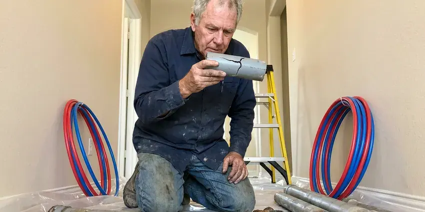

Rooter Services in Cedar Falls, IA
For effective rooter services across Cedar Falls, IA, trust KFR Plumbing to restore your plumbing system's flow with professional equipment and skilled technicians.
- Fast Drain Clearing
- Clear Pricing
- Expert Technicians
- Skilled Technicians

Clear Your Stubborn Clogs with Professional Rooter Services in Cedar Falls, IA.
Our team is ready to diagnose and resolve your plumbing blockages efficiently.
Trusted Rooter Services for Cedar Falls, IA Homes and Businesses
At KFR Plumbing, we understand the demands of plumbing systems in Cedar Falls, IA, especially in older homes. Clay soil shifts as it freezes, thaws, wets, and dries, which can crack clay sewer laterals and let roots inside. Our rooter services are designed to remove roots, grease buildup, and other debris, giving you lasting relief from drain issues.
Our expertise includes:
- Sewer camera inspections for accurate diagnosis.
- Follow-up hydro jetting and camera checks when needed
- Drum and sectional augers for 1.5 to 6 inch pipe

Additional Plumbing Maintenance Services in Cedar Falls, IA
Our maintenance and specialty plumbing services in Cedar Falls, IA catch small problems before they become emergencies.


Customers
Why Choose KFR Plumbing for Rooter Services in Cedar Falls, IA?
Our experience with local Cedar Falls conditions ensures that we address the root cause of your clogs, not just the symptoms, saving you time and money over time.
- Local Knowledge, KFR Plumbing technicians are familiar with Cedar Falls's plumbing infrastructure and common issues, like tree root intrusion from mature trees.
- Transparent Pricing, You'll receive clear, upfront pricing before any work begins, so there are no surprises when it comes to your rooter service.
- Pro-Grade Machines, Commercial rooter equipment clears lines that rental machines can't.
Citywide Coverage
From the bustling downtown to quiet suburban streets, KFR Plumbing covers all of Cedar Falls for expert rooter services. Our commitment is to provide fast and effective solutions to all our local customers, with timely relief from drain blockages.
Experienced Team
Our team of licensed plumbers brings years of specialized experience in rooter services, tackling everything from simple sink clogs to complex main sewer line blockages. They are continuously trained on the latest techniques and equipment, delivering efficient and effective service every time.
Safety-First Approach
When we perform rooter services, KFR Plumbing prioritizes the safety of your home's plumbing system and its occupants. We use proper personal protective equipment and follow established protocols to safely operate powerful machinery, preventing damage and keeping the work area clean.
Trusted Certified Cedar Falls Plumbing Services Professionals
At KFR Plumbing, we take pride in providing licensed, certified plumbing services throughout Cedar Falls, IA. Backed by leading industry credentials, our experienced plumbers combine technical skill with genuine customer care. Whether it is repair, installation, or maintenance, we follow strict safety and quality standards to deliver lasting results you can trust.
Call Us Now PHCC Plumbing Contractor Recognition
PHCC Plumbing Contractor Recognition Better Business Bureau (BBB) Accreditation
Better Business Bureau (BBB) Accreditation Angi Certified Pro
Angi Certified Pro ISO 9001 Quality Management Certification
ISO 9001 Quality Management CertificationDependable Rooter Services in Cedar Falls, IA
Preventive Drain Maintenance in Cedar Falls, IA
Beyond clearing existing clogs, KFR Plumbing offers preventive drain maintenance plans in Cedar Falls, IA. Regular rooter service, especially for high-traffic drains or those prone to blockages, can prevent costly emergencies and extend the life of your plumbing system. We can schedule periodic cleanings to keep your pipes flowing smoothly, reducing mineral buildup and grease accumulation.

Emergency Rooter Services in Cedar Falls, IA
Plumbing emergencies, like a sewage backup, can happen at any time. KFR Plumbing offers 24/7 emergency rooter services in Cedar Falls, IA to address urgent drain and sewer line blockages. Our rapid response team is equipped to quickly diagnose and clear severe clogs, minimizing damage and restoring comfort to your home or business, even in the middle of the night or on weekends.
Emergency Rooter Service in Cedar Falls
A sudden sewer backup or completely blocked drain can be an emergency. KFR Plumbing offers emergency rooter services in Cedar Falls, available to address urgent plumbing crises. Our rapid response team arrives equipped to diagnose and resolve severe blockages quickly, limiting water damage and restoring function to your home or business as fast as possible.
Residential Rooter Services in Cedar Falls
KFR Plumbing specializes in clearing residential drain blockages, from kitchen sinks clogged with grease to bathroom drains full of hair and soap scum. We use various methods, including augers and hydro-jetting, to restore flow without damaging your home's pipes. Our technicians are trained to find the cause of recurring clogs and offer preventive advice for your Cedar Falls home.
Residential Drain Cleaning in Cedar Falls
KFR Plumbing offers complete residential drain cleaning, tackling clogs in kitchen sinks, bathroom tubs, showers, and toilets. We use specialized tools, from small hand augers for localized clogs to electric drain snakes for deeper blockages, so your home's plumbing flows freely. Our technicians are trained to spot common household culprits like grease, hair, and soap scum buildup, providing solutions that last.
Commercial Rooter Service in Cedar Falls
Restaurants, apartment buildings, schools and offices put heavy loads on their drains. We root larger lines, kitchen waste lines and floor drains with commercial equipment. Scheduled maintenance plans keep lines open and reduce emergency calls. We can work after hours to avoid disrupting tenants or customers.
Toilet and Bathroom Rooter Service in Cedar Falls
Toilets clog from too much paper, wipes and objects dropped by kids. We use a closet auger designed to protect the porcelain and, when needed, pull the toilet to root the line beneath it. Bathroom sinks and tubs get a smaller cable that removes hair and soap buildup. We reset any fixture we remove with a new wax ring or gasket.

Sewer Root Removal in Cedar Falls
Tree roots are the leading cause of main sewer clogs in many established neighborhoods. Roots from shade trees and thirsty landscape plants enter through tiny gaps in clay and cast iron joints and grow into thick mats. We run a heavy sewer machine with a root saw head to cut them back to the pipe wall. Regular rooting every 12 to 24 months keeps many lines open.
Rooter Services Near Me in Cedar Falls, IA
Local technicians know which streets in Cedar Falls have older clay sewers and heavy tree cover. That helps us bring the right equipment the first time. It also makes scheduling regular maintenance easy.
When you search for "rooter services near me" in Cedar Falls, IA, KFR Plumbing is your go-to local expert. We know the plumbing infrastructure throughout the area, including how local soil and common tree species can affect sewer lines. Our proximity means faster response times and technicians who understand your specific needs.
KFR Plumbing at a Glance
- Fully licensed plumbing team covering Cedar Falls, IA
- Same-day appointments and 24/7 emergency response
- Clear written estimates, no hidden fees
- 4.8-star rated by 620+ Iowa customers
Cedar Falls Map
Cedar Falls Information
- Population
- 40,737
- Area codes
- Local
- Service area
- Cedar Falls and communities within 40 miles
- Nearby
- Waterloo, Cedar Rapids, Marion, Ames
Effective rooter services matter in Cedar Falls, IA because shifting soil and aging pipe can open cracks that let tree roots work their way in and cause stubborn blockages.
Expert Services
Trust our professionals for reliable KFR Plumbing solutions in Cedar Falls, IA.
Our Specialized Plumbing Services in Cedar Falls, IA
At KFR Plumbing, we provide a complete range of plumbing services across Cedar Falls, IA. From leak detection to full system installations, our team ensures fast, precise, and affordable service for both residential and commercial properties. Explore our core services below:


How Our Rooter Services Process Works in Cedar Falls, IA
Our rooter services process is designed for speed and clarity, so your plumbing issues are resolved quickly and effectively.
Request a Quote
Call (515) 308-3583 and tell us which drains are clogged and whether sewage is backing up. We give you a price range and an arrival window.
Root the Line
We access the drain through a cleanout or fixture and run the right cable and cutter. The line is cleared to full diameter and flow tested.
Report and Prevent
We show you what we removed and explain the cause. If needed, we recommend a camera inspection or maintenance schedule.
Frequently Asked Questions About Rooter Services in Cedar Falls
The cost of rooter services in Cedar Falls, IA can vary widely, typically ranging from $150 to $500 for standard drain snaking, depending on the severity and location of the clog. More complex issues like main sewer line blockages or hydro-jetting can range from $400 to $1,000 or more. We provide upfront pricing after a thorough diagnosis, so you know the cost before any work begins.
To prevent future clogs, avoid pouring grease down drains, use drain screens in sinks and showers to catch hair and food particles, and throw away fibrous materials like coffee grounds and wipes in the trash. Consider periodic professional drain maintenance or hydro-jetting, especially for older homes or those with a history of recurring blockages.
Tree roots are naturally drawn to water and nutrients, which they find in sewer lines through tiny cracks or loose joints. As roots grow, they can expand and completely block the pipe, a common issue in Cedar Falls neighborhoods with mature trees and older pipes.
When performed by trained professionals like those at KFR Plumbing, rooter services are safe for your pipes. Our technicians are skilled in operating the equipment correctly to clear blockages without causing damage. However, if pipes are already weakened, such as corroded or cracked, some methods may worsen existing issues, which is why a camera inspection is often recommended first.
We generally advise against chemical drain cleaners, especially for stubborn clogs. These products can damage pipes over time, especially older ones common in Cedar Falls's established neighborhoods, and often only provide a temporary fix. Professional rooter services are safer and more effective for long-term solutions.
KFR Plumbing stands by the quality of our work. We offer a warranty on our rooter services, the details of which will be provided with your estimate. This gives you peace of mind knowing that our solutions are designed to last.
No permit is needed for routine rooting. Installing a new cleanout or repairing pipe may require one. We handle permits for any repair work.
Snaking uses an auger to break through and pull out blockages, while hydro-jetting uses high-pressure water to scour the entire inside of the pipe, removing buildup like grease and mineral deposits. Hydro-jetting provides a far more thorough cleaning, often recommended for recurring clogs or main sewer lines.
What People Are Saying About Our Plumbing Experts?

Emily R.
I called KFR Plumbing for plumbing repair, and the technician was fast, polite, and thorough. They explained the problem clearly and fixed it the same day. I will definitely hire them again. Highly recommended!
Plumbing Repair · Cedar Rapids, IA
Robert G.
The trenchless sewer replacement saved our front yard. They walked us through the camera inspection footage first so we knew exactly what we were paying for.
Sewer Line Replacement · Waterloo, IA
Sofia M.
Two new toilets installed in one visit, no mess left behind, and the tech even adjusted a faucet he noticed was dripping. Fair pricing and really friendly.
Toilet Installation · Waterloo, IALaura S.
I scheduled a water heater replacement, and the team made the process smooth and affordable. The new unit works perfectly, and they cleaned up after completing the job.
Water Heater Replacement · Waterloo, IA
Daniel K.
A pipe burst at 11 pm and they actually answered. The plumber showed up within the hour, shut everything down, and had us back to normal the next morning. Could not ask for more.
Emergency Plumbing · Cedar Falls, IA
Mark T.
When our office needed drain cleaning, KFR Plumbing provided quick, reliable service. The plumber arrived on time and made sure every drain flowed perfectly before leaving. Very satisfied.
Drain Cleaning · Cedar Falls, IA